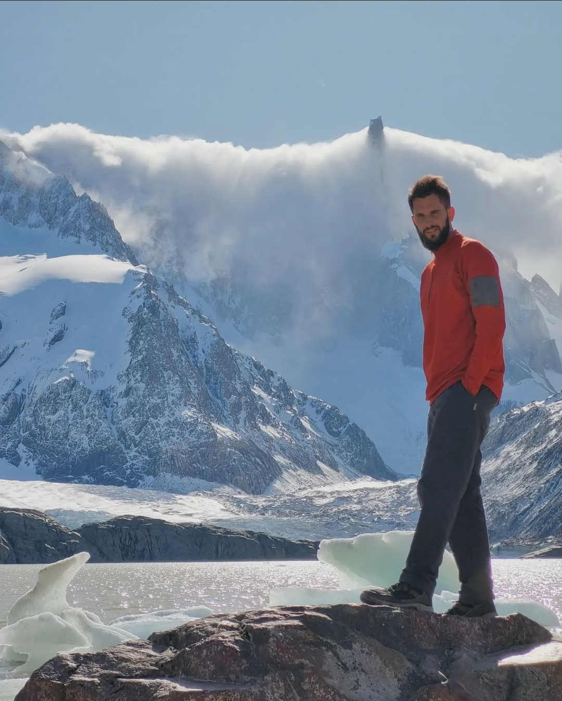

Curriculum Vitae: Lucas Alejandro Alvarez

Datos:
- Edad:34 años
- Dni: 34225042
- Domicilio: Bartolomé Cerretti 882-3A (Adrogué)
- Cel: 1150187889
- Email: alvarezlucasalejandro@gmail.com
- Profesión: Lic. en Psicología
Experiencia laboral:
- 7 años de experiencia en consultorio particular con niños, adolescentes y adultos
- 8 años de experiencia en discapacidad y rehabilitación
- Experiencia como acompañante terapeútico de pacientes con autismo y episodios psicóticos
Redes sociales